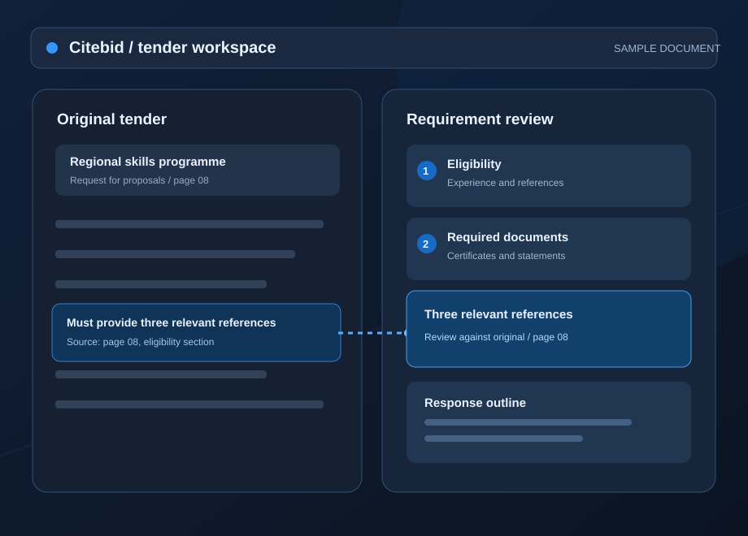
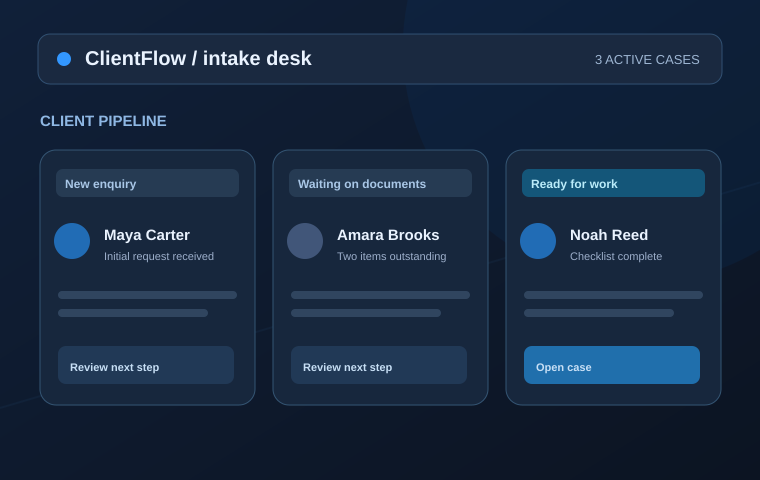
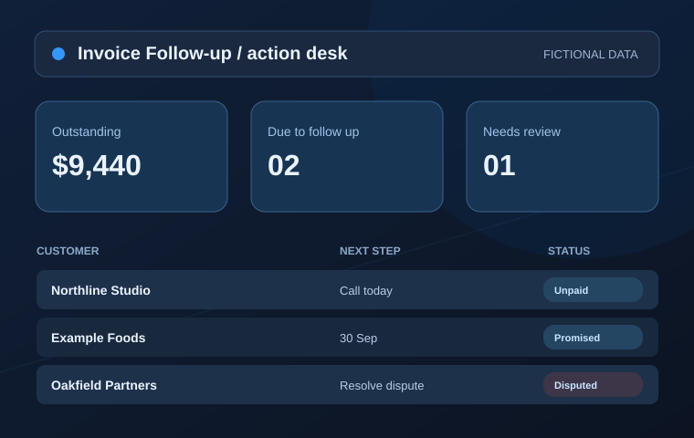
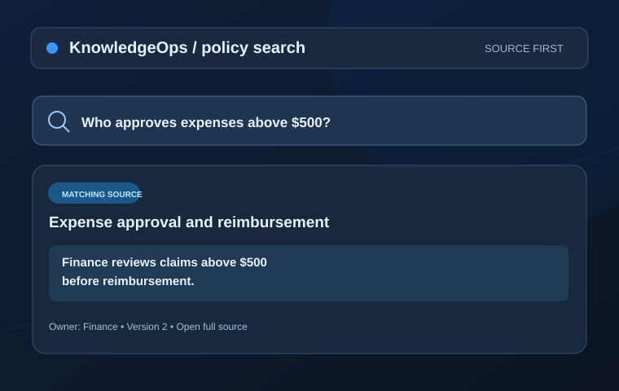
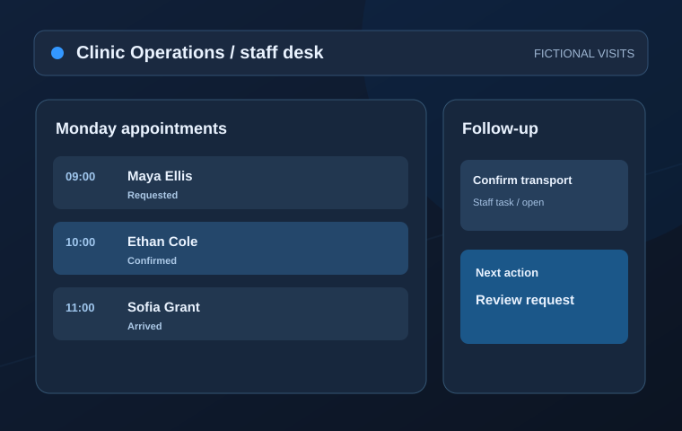

Business Systems Lab / Product experiments
Better systems for
everyday work.
Growing companies need a clearer path through recurring tasks that take too long, lose context or depend on one person remembering everything.
I am building five focused experiments around those moments. Each page walks through a specific problem, who encounters it and what the current prototype can test. A free guided pilot lets your team use safe example information to see whether the approach helps before anyone discusses a larger product.
01 / Featured experiment Private MVP
Citebid
From a dense tender to a clearer bid decision.
For teams facing deadlines, eligibility checks and document requirements scattered across a long procurement brief. Citebid explores how to make that first review more manageable while keeping the original tender available for verification.
Explore Citebid ↗
Four more workflows
Where work gets stuck.
Browse the problem, read a recognizable workday scenario, and tell me where the handoff breaks in your organization.

ClientFlow
A new enquiry should feel like the start of a relationship, not the start of a search for forms, messages and missing information.
Read the product story
Invoice Follow-up
An unpaid invoice is more than a number. It is a conversation, a promise, a date and a next action someone must remember.
Read the product story
KnowledgeOps
The cost of a missing answer is often the interruption it creates for the one person everyone knows to ask.
Read the product story
Clinic Operations
A calm patient experience often depends on the small handoffs that happen before anyone enters the consultation room.
Read the product storyAn open invitation to learn
Try one idea with your team. For free.
A pilot is a small, guided test of one workflow. We choose a useful scenario, start with fictional or safe example data, observe what feels easier or harder and discuss what the idea would need to work in your company. There is no fee, no obligation to adopt and no promise of a particular result. Your feedback shapes what happens next. These are prototypes and experiments, so each project page states what works today and what would require additional development.
What task currently takes too much coordination?
We agree a manageable example and walk through it together.
Your team says what worked and what needs to change.